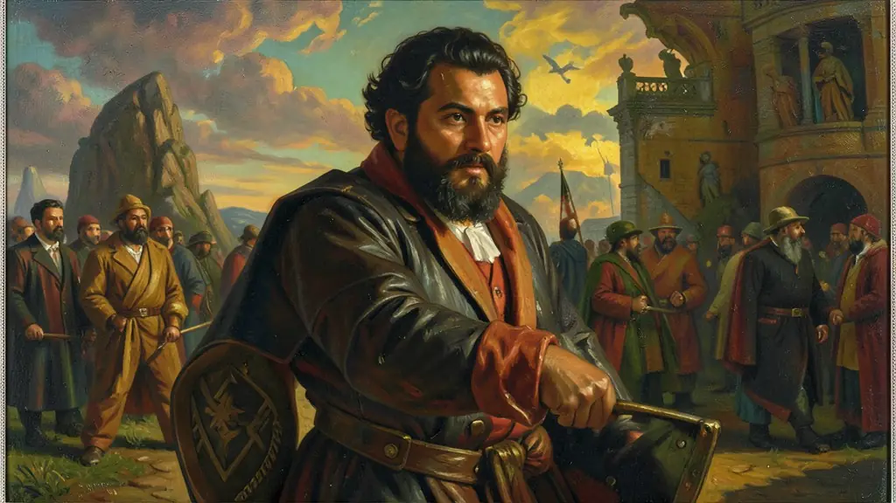
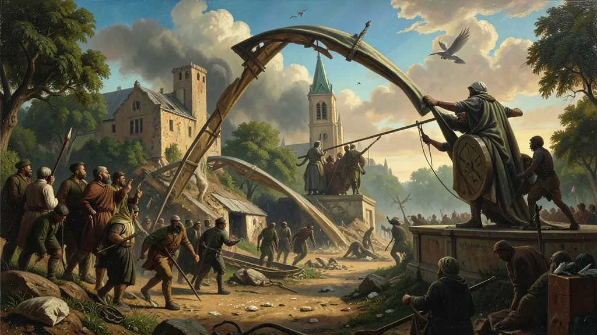
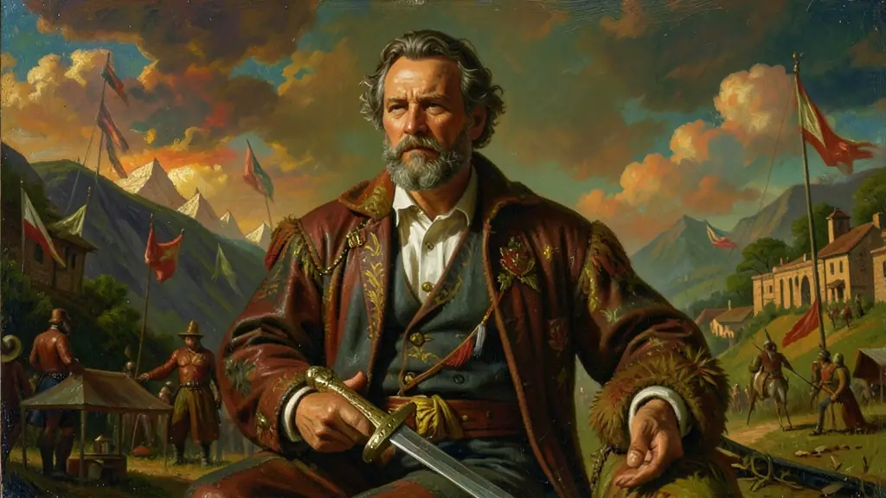

Capítulo 01
1. Os 18 do Forte: O Batismo de Sangue
Em 5 de julho de 1922, o exército cercou o Forte de Copacabana. Em vez de se renderem, os oficiais saíram para a praia com pedaços da bandeira brasileira pregados ao peito. Dos centenas de homens iniciais, sobraram 18 (e dois civis) que enfrentaram as tropas do governo em um tiroteio suicida. Sobreviveram apenas os tenentes Eduardo Gomes e Siqueira Campos, que tornaram-se os primeiros mártires da luta contra a República Velha.

Capítulo 02
2. A Revolta de 1924: São Paulo Bombardeada
Dois anos após o Forte, São Paulo viveu o maior conflito urbano de sua história. Os tenentes rebeldes tomaram a capital para exigir a renúncia do presidente Artur Bernardes. O governo federal respondeu com bombardeios aéreos indiscriminados sobre áreas civis (como o bairro da Mooca). Os rebeldes recuaram em ordem para o interior, unindo-se aos gaúchos para formar a mítica Coluna Prestes.

Capítulo 03
3. Coluna Prestes: O Cavaleiro da Esperança
Comandados por Luís Carlos Prestes e Miguel Costa, milhares de homens cruzaram o Brasil do Sul ao Nordeste. Eles não queriam tomar cidades, mas despertar o povo contra os coronéis. Em cada vila, eles queimavam os arquivos de cobrança de impostos e libertavam presos políticos. A Coluna foi invencível, mas exaurida, seus membros fugiram para o exílio na Bolívia em 1927, deixando uma lenda de honra e resistência no sertão.

Capítulo 04
4. O Programa dos Tenentes: Ordem e Moral
Os tenentes eram oficiais cultos que liam sobre as reformas na Europa. Eles acreditavam que o povo brasileiro era 'atrasado' e precisava de um Estado forte para ser educado. Suas bandeiras eram: o voto secreto (para acabar com o cabresto), o ensino primário obrigatório e a estatização das minas de ferro. Eles não eram socialistas, mas eram nacionalistas ferrenhos que odiavam a corrupção do café com leite.
Capítulo 05
5. De Tenentes a Interventores de Vargas
A Revolução de 1930 só foi vitoriosa porque os tenentes apoiaram Getúlio Vargas. Após o golpe, muitos desses oficiais foram nomeados por Vargas como 'Interventores' nos estados, para substituir os velhos governadores corrompidos. Foi o momento em que a espada militar de fato assumiu o volante da política brasileira, iniciando uma tradição de intervenção das Forças Armadas que duraria décadas.
Surgido nos redutos das jovens patentes da milícia armada o Movimento Tenentista dos anos 1920 (Dezesseis do Forte de Copacabana, Revolta Paulista de 1924 e Coluna Prestes) operou enquanto motor instigador anti-oligárquico ferrenho. Denunciaram e pegaram nas trincheiras armadas contra as fraudes escandalosas contínuas impetradas ao voto eleitoral aberto corrompido, almejando instigantemente a pregação contundente pelo regresso centralizado a ordem republicana verdadeira focada nas prerrogativas da autoridade moral institucional salva.
Esses insurretos operaram como portadores da autoritária 'salvação social'. Embora profundamente desgostosos frente ao sucateamento da caserna, agiam como condutores patriarcais com visões redentoras militarizadas, crendo possuírem sozinhos e acima do reles proletário iletrado do qual temiam proximidades, o condão necessário ético elitista e imbuído da verdadeira retidão purificadora do organismo estatista brasileiro.
A eclosão desses fatos evidencia nitidamente para resolução o Exame a crise contumaz que ruía impiedosamente as estruturas fundacionais das fraudes de Voto-de-Cabresto coronelista no interior do estado frente a modernizante metrópole que germinava. Seriam eles, anos após desilusonados das promessas ou apoiadores centrais, braço executante inafastável ao triunfo varguista total de 1930.
Fonte: CARVALHO, José Murilo de. Forças Armadas e Política no Brasil. Zahar, 2005.
Atividades interativas
Questões para fixar
O movimento dos '18 do Forte de Copacabana', ocorrido em 1922, representou qual etapa da história da República Velha?
A Coluna Prestes (1925-1927) foi uma marcha militar épica que percorreu o interior do Brasil. Qual era o seu principal objetivo político?